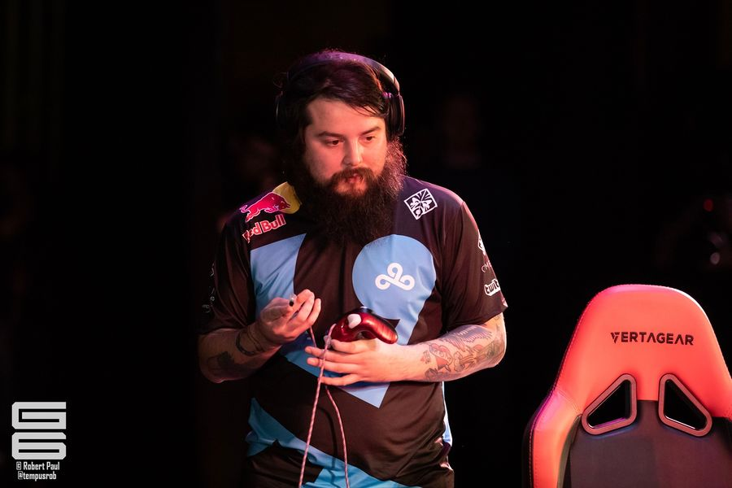
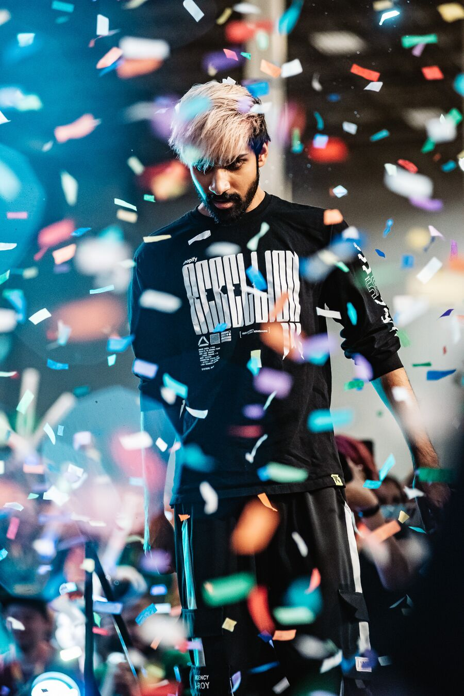

Super Smash Bros. Melee is a competitive fighting game developed by Nintendo for the GameCube and Wii. Since its release in 2001, the game has become a staple of competitive gaming, with a dedicated community and esports scene. However, it was not until Melee Summit 11 in 2021 that the games competitive landscape was changed forever.
Melee Summit 11 was an invitational tournament held in Los Angeles, California. Featuring the best players from around the world, the hype generated by this event was unprecedented. As this was the first LAN tournament following the pandemic and a year of online play. The main storyline of the tournament was the rivalry between two of the best players in the world, Zain and Mang0. Everyone knew that Zain was likely to win, because of this dominance in the Online era. However, Mang0 was the closest player to Zain's pedigree. So, the question was, could Mang0 conquer Zain or would Zain continue his dominance?

Mang0, also known as Joseph Marquez, is a professional Super Smash Bros. Melee player from the United States.
He is widely regarded as the best players of all time. He has won over 20 tournaments throughout his
career.
Mang0 is known for his aggressive playstyle and his ability to make comebacks in high-pressure situations.
"Learn more about Mang0"

Zain, also known as Zain Naghmi, is a professional Super Smash Bros. Melee player from the United States.
He is widely regarded as the best players in the modern era. Like Mang0, he has won over 20 tournaments
throughout his career.
Zain is known for his technical skill and his ability to adapt to different playstyles.
"Learn more about Zain"
July 18, 2021. After more than a year of online competition, Melee finally returned to the offline stage at Smash Summit 11. Grand Finals saw Mang0 face the world's best player, Zain. After falling 0–2, Mang0 mounted an incredible comeback, winning three consecutive games to reset the bracket. The second set went down to Game 5, where both players were fighting for the championship. In the defining moment, Zain's Marth missed an attack by just one frame, allowing Mang0's Fox to shield and turn the situation around. Mang0 capitalized on the opening, took Zain's final stock, and claimed his first Smash Summit championship. One frame separated victory from defeat, creating one of the most unforgettable moments in competitive Melee history.
Watch the full match